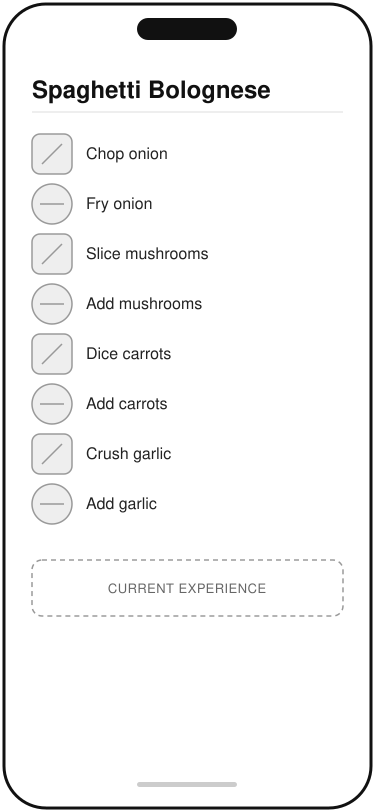
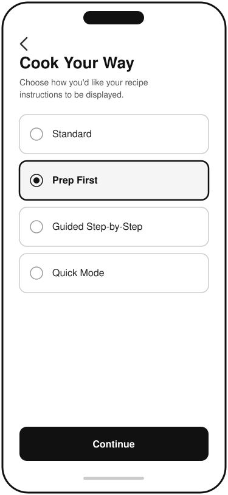
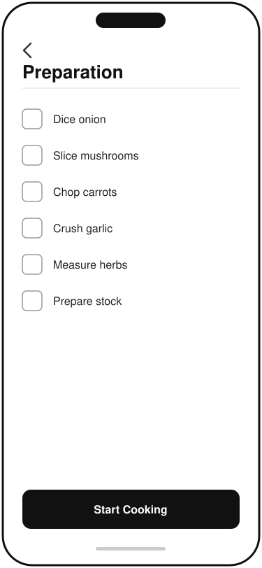
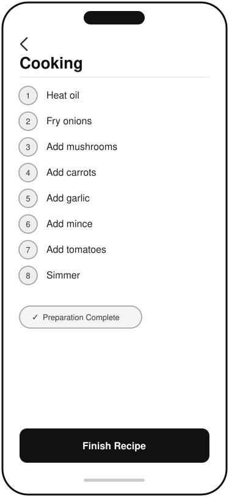

Improving Recipe Instructions Through Personalised Cooking Preferences
Meal kit services provide step-by-step cooking instructions designed for the average user. However, not everyone cooks in the same way.
This case study explores how allowing users to personalise recipe instructions based on their preferred cooking style could create a more intuitive cooking experience, reduce frustration and improve customer satisfaction.
What was the problem?
Current recipe instructions follow a single workflow.
During my own experience using meal kit services, I found that the prescribed order often didn't match how I naturally cook. For example, I prefer to complete all ingredient preparation before I begin cooking, rather than repeatedly switching between chopping, cooking and measuring throughout the recipe.
While the recipes are technically correct, they aren't optimised for different cooking preferences.
The opportunity is to provide users with flexible instruction formats without changing the recipe itself.
Who was affected, and who had a stake?
I identified the key stakeholders through analysing the current user journey, supported by observations of my own cooking experience and consideration of the teams responsible for delivering and supporting the feature.
Home Cook (Primary User)
Goal: Cook meals in a way that suits their personal workflow
Pain points:
- Constantly switching between preparation and cooking.
- Feeling rushed while ingredients cook.
- Needing to pause instructions.
Product Team
Goal: Increase customer satisfaction and engagement
Pain points:
- Recipes must suit a wide range of cooking styles.
- Limited personalisation within the app.
Customer Support
Goal: Reduce complaints relating to recipe usability
Pain points:
- Difficult to distinguish between recipe issues and user preferences.
Requirements, in their words
Acceptance criteria
Given a recipe contains preparation and cooking steps,
when I select "Prep First" mode,
then all ingredient preparation steps are shown before any cooking begins.
What the solution looked like
I adopted a low-fidelity wireframing approach to focus on validating user flows and functionality before considering visual design. I would typically create these wireframes using a tool such as Figma; however, for this portfolio case study I used Claude AI to rapidly generate initial concepts, which I reviewed and refined to ensure they aligned with the user requirements and proposed solution.

1 · Current recipe experience

2 · Cooking preferences

3 · Prep First checklist

4 · Cooking steps only
Result
This enhancement demonstrates how a relatively small product improvement could create a more personalised cooking experience without changing the recipes themselves. By allowing users to choose how instructions are presented, the feature caters to different cooking styles while maintaining a single source of recipe content.
Expected benefits
- Reduced frustration caused by constantly switching between preparation and cooking.
- A more personalised user experience that accommodates different cooking preferences.
- Improved confidence for less experienced cooks through clearer instruction flow.
- Increased customer satisfaction and engagement by allowing users to tailor the experience to their needs.
- Potential reduction in recipe-related support queries caused by confusion over instruction sequencing.
Success measures
If implemented, success could be measured through:
- Increase in feature adoption (users enabling Cook Your Way).
- Customer satisfaction (CSAT/NPS) for recipe usability.
- Reduction in recipe-related customer support contacts.
- User feedback ratings on recipe clarity.
- Percentage of returning users who continue using a personalised cooking style.
Reflection: This case study demonstrated the importance of understanding user behaviour rather than assuming a single workflow suits everyone. By focusing on one specific pain point, I was able to define a solution that balances user needs with a realistic product enhancement and measurable business outcomes.